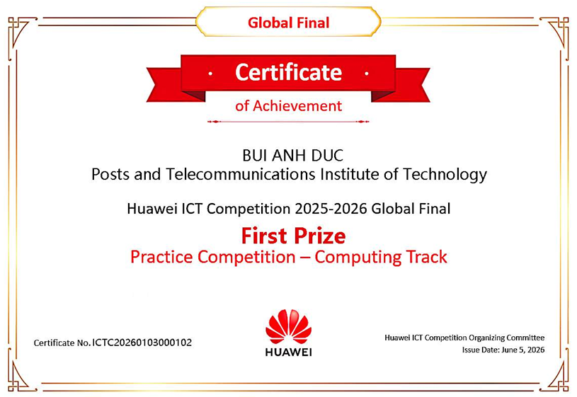
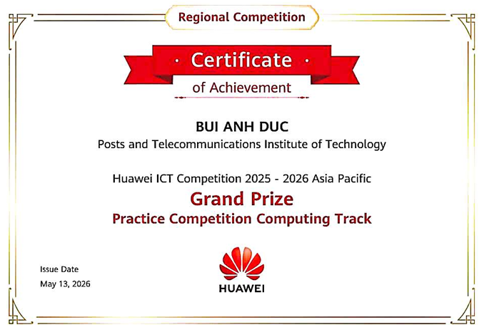
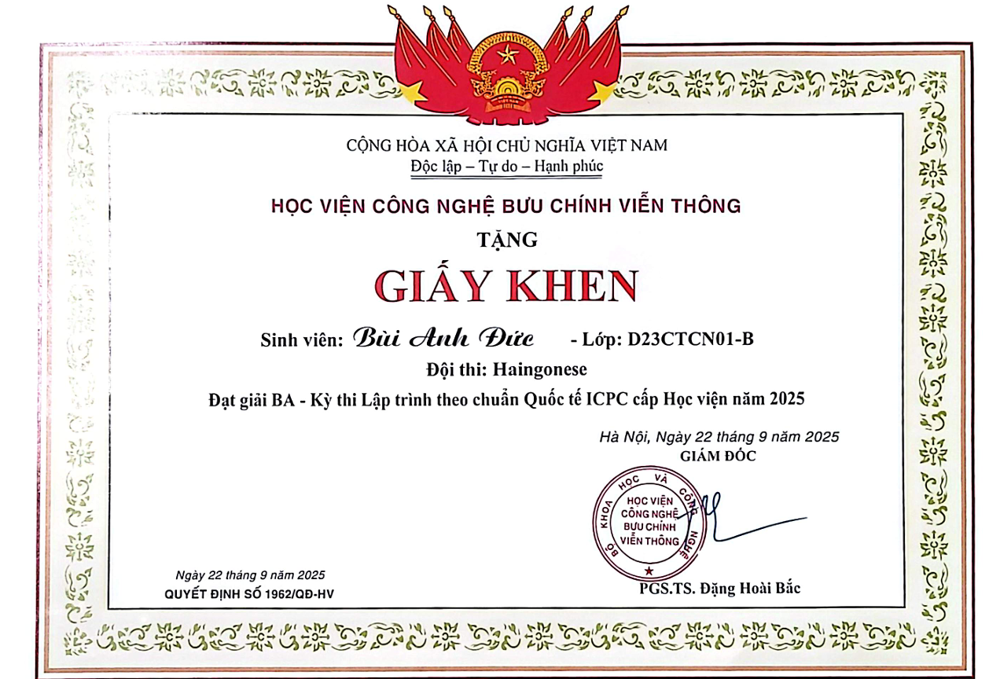
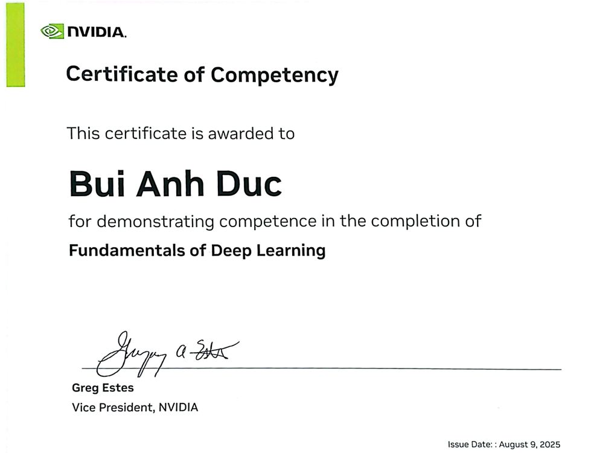
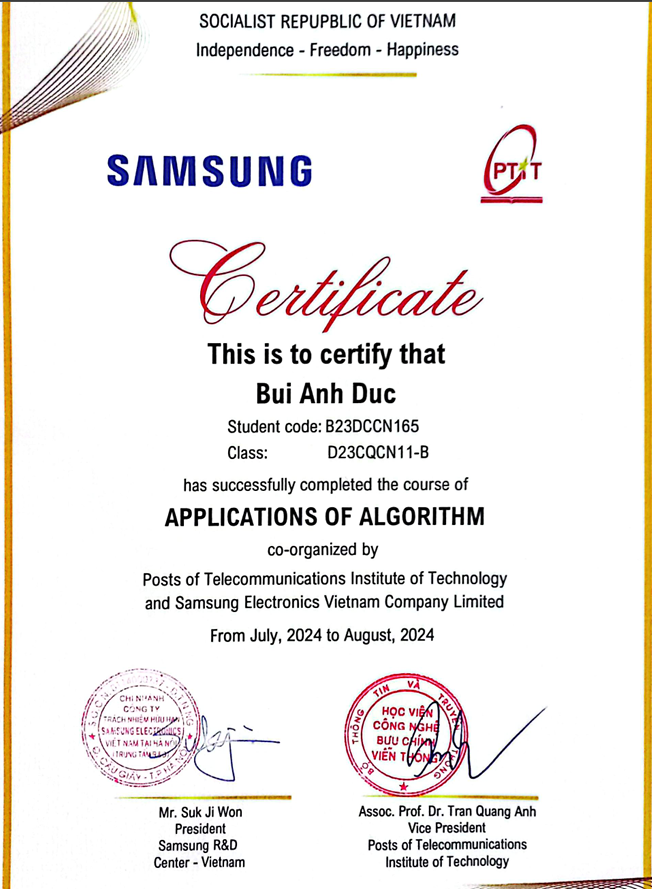

01
Cloud Systems
Deploying and studying scalable services, containerized workloads, cloud resources, and reliable infrastructure.
CLOUD SYSTEMS · NETWORK RESEARCH · AI
I'm Bui Anh Duc, exploring scalable cloud infrastructure and learning-based models for resource and network optimization. I combine research curiosity with hands-on systems engineering.
01 / RESEARCH DIRECTION
My current direction combines cloud deployment, network fundamentals, and AI methods for complex resource and connectivity problems.
Deploying and studying scalable services, containerized workloads, cloud resources, and reliable infrastructure.
Studying how networked systems can become adaptive, efficient, observable, and easier to operate.
Applying computer vision and deep reinforcement learning to perception, resource control, and sequential decisions.
02 / RESEARCH TOOLKIT
A practical toolkit for turning research questions into reproducible experiments and working systems.
03 / SELECTED HIGHLIGHTS
Selected awards, cloud projects, academic work, and certificates from my latest CV.

FIRST PRIZE / JUNE 2026
First Prize in the Computing Track, covering hands-on cloud computing, openEuler, openGauss, and Kunpeng technologies.

GRAND PRIZE / MAY 2026
Grand Prize in the 2025–2026 Computing Track at the Asia Pacific regional competition.
6 CONSECUTIVE SEMESTERS
Awarded for excellent academic performance in six consecutive semesters; current GPA 3.85/4.0.
TEAM LEADER / FEB–MAY 2026
Built a booking and payment platform with caching, asynchronous messaging, CI/CD, AI-assisted marketing, and a fully containerized AWS EC2 deployment.
TEAM LEADER / OCT–DEC 2025
Led a five-member team, integrated OAuth2/JWT and VNPAY, then deployed the application on AWS EC2.

THIRD PRIZE / SEPTEMBER 2025
Third Prize in competitive programming, algorithms, and data structures.

CERTIFICATE / AUGUST 2025
Certificate of Competency in Fundamentals of Deep Learning.

CERTIFICATE / AUGUST 2024
Advanced Algorithm Applications course co-organized by PTIT and Samsung Electronics Vietnam.
ACADEMIC CONTRIBUTION
Supporting academic collaboration, mentoring, and technical guidance in data structures and algorithms at PTIT.
04 / CONTACT
Open to research conversations, collaboration, and opportunities around cloud systems, intelligent networks, and AI.
buianhducnd96@gmail.com